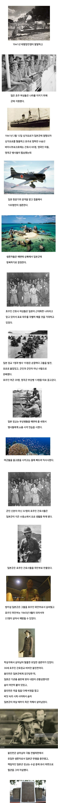

2차대전, 일본군에 잡혔던 호주 간호사
댓글
그럴줄 알았다, 역시 논리가 없네
중동역사도 모르고, 침략과 침공의 차이도 모르는데 논리가 있겠냐
그래됐다 말을 말자 반박시 니말이 다 맞다
전형적인 대한민국 대표 모지리 냄비근성 아저씨 ㅂㄷㅂㄷ거리면서 계속 그렇게 살어
걍 다른말 다 제처두고 정의타령할거면
다른 애들말처럼 우크라이나에 직접 가던가
니가 말하는 정의를 위해서 니가 대체 하는게 뭔대?
여기서 키배뜨기? 에라이 병신아
아가리 정의 개씹극혐이네 진짜
유독 이런 남들이랑 다른 비상식적 말하는 애들은 왜 저렙일까? 저렙 분탕설을 안믿고 싶어도 존나 계속 튀어나오니까 슬슬 믿음이 간다
그럼 일단 니가 우크라이나 의용군 가주면 될듯 우크라이나에서 두팔벌려 환영해줌
그래서 누가 신사참배 하래?
말이 되는소릴해라. 국력도 안되면서 허황된 목표 세워놓고 협상판 엎어버리고 전쟁 계속 하다가 무기 맡겨 놓은것처럼 지랄하는게 누군데? 니 논리대로 우크라를 끝까지 지원 해줘야 한다면 우리나라 삼팔선은 도대체 왜 생겼냐? 한국전쟁이야 말로 공산주의의 침략에 맞선 자유민주주의의 성전이였는데?
국력도 안되면서 허황된 목표(북진통일) 세워놓고 협상판 엎어버리고(반공포로 석방) 전쟁 계속(휴전 반대 운동) 하려고 한 1953년 이야기인가? 한국도 그런 역사를 겪어왔고 한미 상호방위조약으로 휴전을 받아들였었는데 젤렌스키 입장에서도 안보보장 조약이나 주우미군같은 카드가 있지 않는 이상 전쟁 끝내기 쉽지 않지. 젤렌스키 개인을 위해서가 아니라 나라를 위해서라도. 다만 우리때는 아이젠하워였고 지금은 트럼프라는게 우크라이나 입장에선 비극이라면 비극이겠지. 한국인으로서 안타까운 마음임.
야 이런 병신 새끼들에게 이런말 한다고 달라지겠니
그냥 병신 새끼들 하고 말아라
니는 왜 pmc로 안가고 한국에 남아서 키보드 질이냐 ㅋㅋㅋㅋㅋㅋ
그럴 능력도 실력도 용기도 없어서 그런거 아니겠니
근데 갑자기 왜 여기서 우크라이나가 나옴?
얘가 말을 쌔게 해서 그렇지 맞말임.
일제 시대에는 정의의 논리를 가져오는데,
정작 오늘 날 전쟁에는 힘의 논리를 가져옴.
우러전뿐 아니라, 다른 모든 현대 전쟁에서
‘그래서 우리 편이 누구인데? 누가 이득인데?’만 따짐.
지금이야 우크라이나 외교 어쩌고 하지,
전쟁 초반부터 ‘우크라이나에 무기를 왜 줌? 러시아랑 척질거임? 우리 기업 다 철수하게?’ 같은 식이었음.
정작 시대는 과거가 힘의 논리가 정답이었고,
지금이 정의의 논리가 있는건데도 말야.
뭐가 맞말이야 복잡한 사안을 단편적으로 퉁치고 서로 다른 사안을 일반화 시켜서 논리에 오류가 생기는거지
우크라이나가 러시아에 부당하게 침략 당하고 억울한 사람들이 엄청나게 죽는 것도 사실이고
우크라이나가 외교를 뭣같이 하고 맡겨 놓은 것 마냥 비상식적인 요구를 하는 것도 사실인거야
일제 시대에는 정의의 논리를 대고, 현재는 힘의 논리를 댄다는 것도 마찬가지 오류임
현재에도 만약 러시아든 우크라이나든 일본 군부처럼 위안부 운영하고 무고한 민간인들에게 불필요하게 비상식적인 윤리 어긋나는 행위를 하면 그건 그거대로 비난 받아야 마땅한거야
백가지 서로 다른 사안에서 하나의 사례를 침소봉대해서 흑백 논리를 들이밀면 안되지
원종단새끼 하나 댓삭튀했나보내 ㅋㅋㅋㅋ
인간도 아닌 쓰레기들
+ 우크라이나 국민이 죽어가는데도, 무기 맡겨놨냐며 우크라이나 욕하는 개드립 몇몇 인간도 아닌 쓰레기중에 상쓰레기 악마들이지
ㅈㄹㄴ
댓글 상태가 왜 이래
미해병, 미해군, 미육군, 커티스 르메이, 체스터니미츠, 홀시제독님 감사합니다.
일본이 일본했네
요즘 일본까면 일본맘들 실드 댓글 즐줄이 달리더라ㅋ
실드는 당연히 아닌디 저때 일본은 자국민들도 저렇게대우햇다더라 ㅋㅋ적국이라던가 그런 이유는 아닌듯
절대 그럴리 없지만 전쟁한번 나는것도 그리 나쁘지 않을듯 선과악의 양면성과 맞음과 틀림의 경계선을 새롭게 만들게 될것이다
영화 파라다이스 로드(1997) 생각난다
ㅠㅡㅠ
우크라이나는 3자 아니냐? 니가 쓴 댓글 좀 읽어봐라 좀 병신아
아니 시발 보자마자 오류에 모순에 씨발 지랄을하고있네
그따위로 역사따지면 씨발아 소련시절 우리나라 침공한건 제외야?
북한에 무기만대주고 전투기조종사 자원했으니 침공이 아님?
북한의 남한 침공이 아님?
우크라이나는 소련아니었음?
우리나라입장에선 둘다 나쁜새기네?
그럼 우리나라가 이득보는개 맞네? 씹등신새끼
예시도 개병신쓰레기같은 예시를 들고와서는
뭐 우리나라가 유럽욕한대~ 이지랄이나떨고있고
애초애 뇌가 텅텅비어서 냄비근성 뜻도 모르는거같고
우리나라에서 우크라이나가 어디에 붙어있는지조차 모르는 사람조차 태반일탠대
뭔 씨발 니가 유엔을 들어가서 사무총장이라도하던가?
방구석쓰레기주제에 뭔 좆같은 소리를 처하고있어
그리고 그냥 이딴 키배할시간에 아프리카 표 알아봐서 꺼져서 봉사활동이나 처 하라고 씨발아
정의를 따질거면 ㅋㅋㅋㅋㅋㅋㅋㅋ
그 이야기는 쏙 빼버리지? 병신련